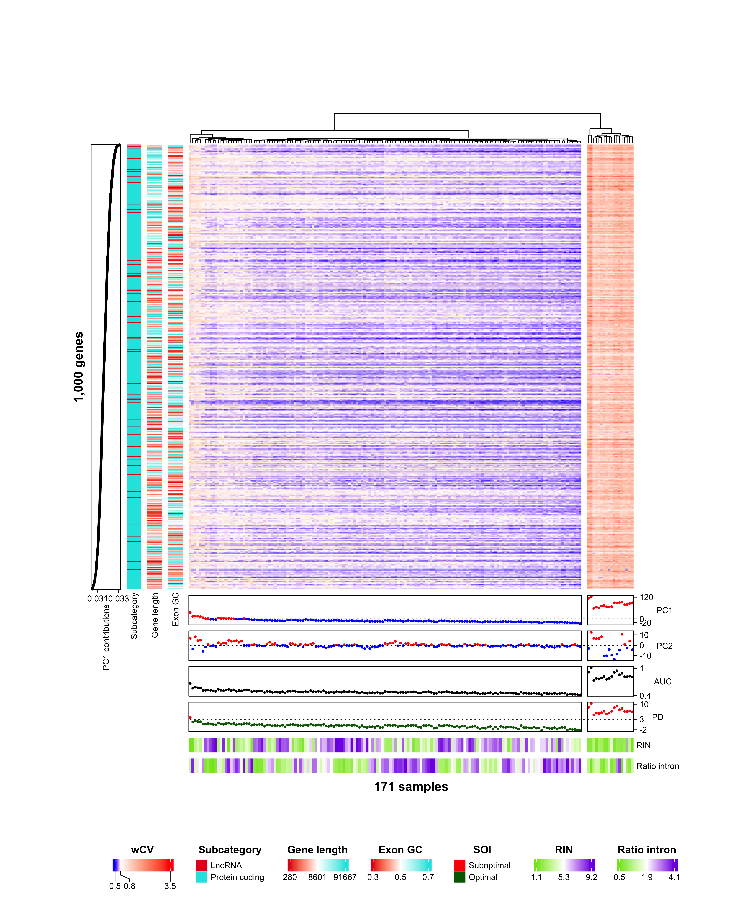

6 Applications
6.1 Principal component analysis
The wCV values directly affect to AUC in the restricted MCD when the fitted regression lines are very different per sample. Since AUC is used to get SOI, we can check how PC scores of wCV are related to SOI. After handling missing values, let’s keep genes having positive variance within samples.
wCV.mat2 <- wCV.mat
wCV.mat2[is.na(wCV.mat2)] <- 0
wCV.mat2 <- wCV.mat2[apply(wCV.mat2, 1, var)!=0, ]stats::prcomp() function performs PCA, and its result can be applied to calculate pc1_contributions to figure out contributions of each gene to the PC1.
6.2 Window CV heatmap
A heatmap from ComplexHeatmap helps to visualize patterns of the wCV matrix with genes and samples properties. To construct row and column annotations, additional variables can be added by matching genes and samples:
- AUC, PD, and SOI from Suboptimal/Optimal index
- PC1, PC2, and PC1 contributions from Principal component analysis
The columns are split as 2 clusters by dendrogram, which is corresponding to most of suboptimal samples.

6.3 Sample quality summary
table1::table1() function displays descriptive statistics by a categorical variable.
We can simply review mean and range of sample properties by sample quality for general comparison.
library(table1)
table1(
~ AUC + PD + RINs + RatioIntron | SOI,
data = SplAnnomat,
render.continuous = function(x) {
sprintf("%.2f [%.2f, %.2f]", mean(x, na.rm=TRUE), min(x, na.rm=TRUE), max(x, na.rm=TRUE))
}
)| Optimal (N=152) |
Suboptimal (N=19) |
Overall (N=171) |
|
|---|---|---|---|
| AUC | 0.48 [0.42, 0.59] | 0.83 [0.67, 1.01] | 0.52 [0.42, 1.01] |
| PD | -0.23 [-2.25, 2.13] | 6.79 [3.74, 10.34] | 0.55 [-2.25, 10.34] |
| RINs | 5.77 [1.30, 9.20] | 2.79 [1.10, 4.60] | 5.44 [1.10, 9.20] |
| Missing | 3 (2.0%) | 1 (5.3%) | 4 (2.3%) |
| RatioIntron | 1.94 [0.46, 4.07] | 1.32 [0.57, 2.80] | 1.87 [0.46, 4.07] |